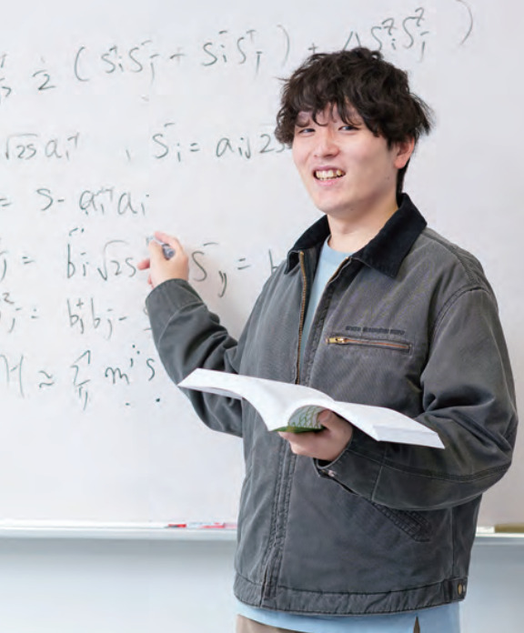

Takayuki
Yokoyama.
横山 貴之
強相関量子多体系における物性現象の開拓
広島大学大学院 先進理工系科学研究科 量子物質科学プログラム 博士課程後期多田研究室 / Tada Group · D2
PROFILE
プロフィール
横山 貴之（Takayuki Yokoyama）
広島大学大学院 先進理工系科学研究科 量子物質科学プログラム 博士課程後期。多田研究室 D2。
専門：磁性・量子スピン液体・ボゾン系・冷却原子（理論）
PROFILE
経歴
- 2025年4月 – 現在 広島大学大学院 先進理工系科学研究科 先進理工系科学専攻 量子物質科学プログラム 博士課程後期
- 2025年3月 広島大学大学院 博士課程前期 修了
- 2023年4月 広島大学大学院 博士課程前期 入学
- 2023年3月 広島大学 理学部 物理学科 卒業
- 2019年4月 広島大学 理学部 物理学科 入学
- 2019年3月 愛媛県立宇和島南中等教育学校（現宇和島南高等学校）後期課程 卒業
PROFILE
研究内容
強相関量子多体系に関する物性理論的な研究をおこなっています。特にこれまで、スピン液体などのフラストレート磁性体や、一次元量子スピン系、ディラック電子系における超伝導体、冷却原子系におけるボゾン多体系に関する理論研究などをおこなってきました。最近では分数チャーン絶縁体に興味があり、研究に取り組み始めています。
学生期間中の一貫した研究テーマとして「強相関量子多体系における物性現象の開拓」に取り組んでいます。
例えば、量子多体系に外場としてU(1)ゲージ場を印加した場合に生じる、新たな物性を探しています。他にも、ひねり演算子と呼ばれている、グローバルな（ローカルな場合もある）U(1)ゲージ変換によって生じる応答をプローブに、量子状態の性質をうまく理解する方法を考えています。
【研究方法】平均場のような一体問題にうまく落とし込んで、多体系を記述することも、物理の醍醐味だと思います。一方で、量子ゆらぎ・多体の効果を気合で全て取り込んで、根性で多体計算をやりきることも好きです。（なので今までの研究では、数値計算の論文が多いです。）
数値計算では、密度行列繰り込み群（DMRG）をはじめとするテンソルネットワーク法を主に用いています。最近は多変数変分モンテカルロ法（mVMC）に興味があります。
WORKS
論文
査読あり
投稿中・プレプリント
CV
発表
国際会議（ポスター）
国内学会・研究会（口頭）
国内学会・研究会（ポスター）
PROFILE
表彰
- 2026年10月 日本物理学会 2026年第81回年次大会 領域3 学生優秀発表賞
- 2026年10月 広島大学 先進理工系科学研究科 学術奨励賞
- 2026年8月 第8回冷却原子研究会「アトムの会」学生優秀発表賞
- 2026年4月 日本物理学会 2026年春季大会 領域11 学生優秀発表賞
- 2024年10月 広島大学 先進理工系科学研究科 学術奨励賞
- 2024年7月 広島大学 優秀な博士課程前期学生への授業料免除
- 2023年12月 広島大学 エクセレントスチューデントスカラシップ 表彰
PROFILE
外部資金
- 2027年4月 - 2029年3月（採用内定）日本学術振興会特別研究員（DC2)
- 2025年4月 - 2028年3月 創発的次世代研究者育成・支援プログラム（JST SPRING）
- 2025年6月 公益信託池田育英会トラスト 奨学金（民間奨学金）
PROFILE
教育歴
- 2023年4月 - 2023年8月 広島大学理学部物理学科「量子力学演習」 TA
- 2023年10月 - 2024年2月 広島大学理学部物理学科「物理数学A」TA
- 2023年10月 - 2024年2月 広島大学学部共通教養科目「健康スポーツ科学」TA
- 2024年4月 - 2024年8月 広島大学学部共通基盤科目「情報データ科学入門」TA
- 2024年10月 - 2025年2月 広島大学学部共通教養科目「健康スポーツ科学」TA
- 2025年4月 - 2025年8月 広島大学学部共通基盤科目「情報データ科学入門」TA
- 2026年4月 - 2026年8月 広島大学学部共通基盤科目「情報データ科学入門」TA
PROFILE
その他
- 2022年 - 2025年 広島大学グローバルキャリアセンターにて大学院生へのインタビューアルバイトを行っていました。
- 日本学生支援機構（JASSO）第一種奨学金 特に優れた業績による返還免除制度 全額免除
PROFILE
趣味
ジャグリングと呼ばれるものに真剣に取り組んでいます。
04 / 連絡先
yokotaka308[at]hiroshima-u.ac.jpご連絡はこちら。
連絡先